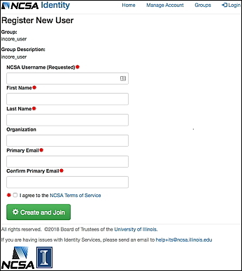

2. IN-CORE account¶
A user must have an account recognized by the IN-CORE service. Please register. NOTE: Use your institutional email if possible.

The username/password is used for accessing IN-CORE services. You can test your registration credentials by accessing the IN-CORE page at: https://incore2.ncsa.illinois.edu/
This is also used for accessing the documentation and Jupyter Notebook test file (buildingdamage.ipynb).